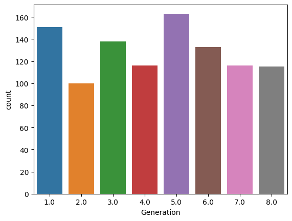
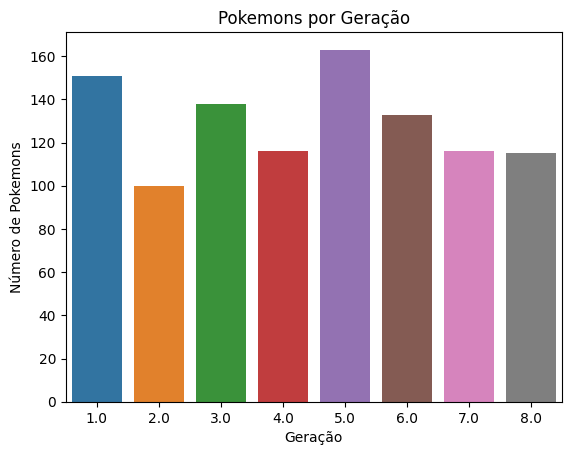
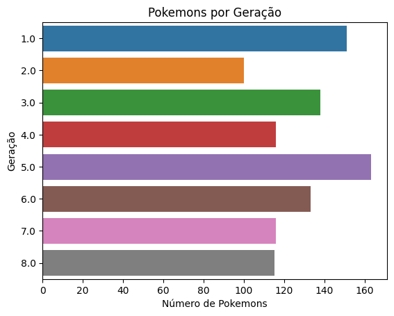
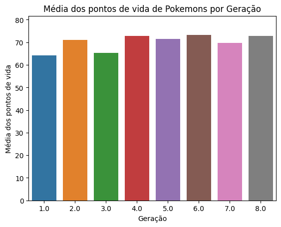
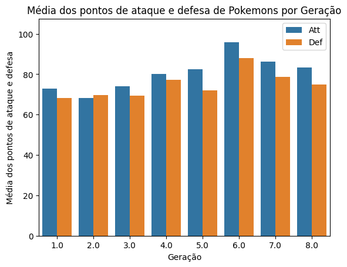
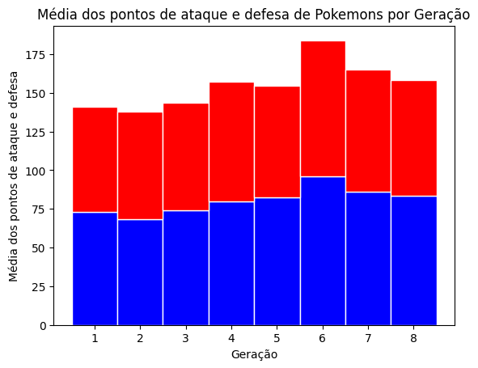
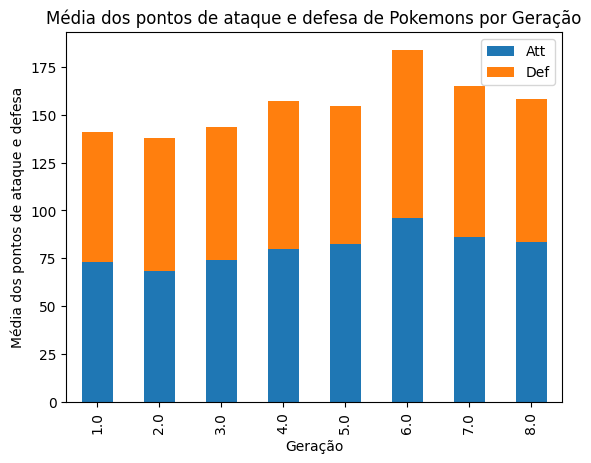

import seaborn as snsIntrodução
Olá Cientista de Dados!
Bem-vindo de volta! Na última aula aprendemos como utilizar a biblioteca Pandas para carregar no notebook os dados que pretendemos trabalhar. Também aprendemos a utilizar algumas funções mais avançadas que nos permitem filtrar ou agregar informações em nosso conjunto de dados.
A linguagem Python possui inúmeras bibliotecas não-nativas para gerar visualizações de dados. A biblioteca mais famosa e que muitas vezes serve de base para as outras se chama matplotlib. Por uma questão de conveniência e facilidade de uso, utilizaremos no curso a biblioteca seaborn.
As principais vantagens do seaborn são: - interface alto nível - existe uma função para cada tipo de gráfico, e permite fazer chaining de chamadas - facilidade de configuração - possui objetos de configuração globais e locais (em cada gráfico).
Nesta aula, vamos passar pelo processo de instalação e utilização dos tipos de gráficos mais básicos no seaborn.
Instalação
Assim como na aula de Pandas, tenho uma boa notícia: no Google Colab o seaborn já vem instalado no nosso ambiente! Mas caso você esteja também se aventurando em fazer este curso no VS Code, PyCharm, Sublime ou até mesmo Notepad, o comando para instalar a biblioteca seaborn é o seguinte:
(venv) $ pip install seabornVisualizando com seaborn
Agora vamos ver na prática como o seaborn funciona. Nesta aula, veremos os tipos de gráficos mais comuns, indicando sua utilização e dando exemplos. Se você quiser mais detalhes, sempre pode consultar a documentação do seaborn em Seaborn Docs.
Nesta aula, vamos aprender a gerar gráficos de barras ou colunas, baseados nas funções: countplot() e barplot(). Nas aulas seguintes, iremos explorar outros tipos de gráficos, que são um pouco mais avançados.
Inicializando o seaborn
Como toda a biblioteca python, precisamos indicar em nosso script quando queremos utilizar a biblioteca seaborn. Fazemos isso através do comando import.
Da mesma forma que falamos na aula de Pandas, o import do seaborn geralmente utiliza o apelido de sns, que pode ser encontrado em muitos artigos na internet. Vamos manter essa convenção para que vocês se acostumem ao procurar material de apoio.
Por falar de Pandas, precisamos carregar ele também, afinal, precisamos dos nossos dados!
import pandas as pdCarregando os dados
E vamos continuar nossas demonstrações com o conjunto de dados de pokemons:
pokemons = pd.read_csv('pokemons.csv')Gráficos de barras ou colunas
Um gráfico de barras ou colunas é uma representação gráfica de dados em que as informações são exibidas em barras verticais ou horizontais de comprimentos variáveis. Cada barra ou coluna representa uma categoria ou conjunto de dados diferentes, e a altura ou comprimento da barra é proporcional à quantidade ou valor correspondente.
Os gráficos de barras são frequentemente usados para comparar quantidades ou valores entre diferentes categorias, enquanto os gráficos de colunas são mais adequados para exibir uma série temporal de dados. Ambos os tipos de gráficos podem ser usados para exibir dados discretos ou contínuos, e podem ser personalizados para incluir rótulos, legendas e outras informações relevantes. Os gráficos de barras e colunas são comumente usados em relatórios, apresentações e em análises de dados.
countplot()
A primeira função que iremos aprender a utilizar é a função countplot(). Ela é indicada quando queremos realizar a contagem de uma categoria, ou seja, escolhemos um campo categórico em nossos dados e indicamos quantas ocorrências encontramos em nossos dados. Nos próximos blocos de código, veremos vários exemplos de como fazer isso.
# contando o número de pokemons por geração
plot = sns.countplot(pokemons, x="Generation")
plot<Axes: xlabel='Generation', ylabel='count'>
Olha só, parece bem fácil, não? Está ali o nosso gráfico, com o número de pokemons por geração. No entanto, temos algumas melhorias que podem ser feitas:
- adicionar um título
- corrigir os títulos dos eixos.
Para realizar esses ajustes, vamos precisar de uma nova biblioteca, chamada matplotlib. Na verdade, essa biblioteca é a base de muitas outras bibliotecas de visualização, tais como seaborn, plotly e por aí vai.
Neste cenário, matplotlib é utilizada para preparar o que chamamos de área de plotagem, que é o retângulo branco onde nosso gráfico será exibido.
import matplotlib.pyplot as plt
# contando o número de pokemons por geração
sns.countplot(pokemons, x="Generation")
plt.title('Pokemons por Geração') # título do gráfico
plt.xlabel('Geração') # eixo X
plt.ylabel('Número de Pokemons') # eixo Y
plt.show() # mostra o gráfico
Agora sim, temos um gráfico bem desenhado!
Este gráfico é um Gráfico de Colunas, de acordo com as definições, pois as barras são verticais. Para transformar em um gráfico de barras, na função countplot() precisamos apenas trocar o x pelo y no segundo parâmetro, além de trocar os títulos na funções xlabel e ylabel. Vamos ver como fica:
sns.countplot(pokemons, y="Generation")
plt.title('Pokemons por Geração') # título do gráfico
plt.ylabel('Geração') # eixo Y
plt.xlabel('Número de Pokemons') # eixo X
plt.show() # mostra o gráfico
barplot()
Nos gráficos utilizando countplot() podemos apenas exibir a contagem de elementos para cada valor categórico da coluna que escolhemos. Não temos como, por exemplo, apresentar a média dos pontos de vida dos pokemons. Para isso, precisamos de mais controle sobre os dados que iremos mostrar. Entra em cena a função barplot():
import numpy as np
sns.barplot(pokemons, x='Generation', y='HP', estimator=np.mean)
plt.title('Média dos pontos de vida de Pokemons por Geração')
plt.xlabel('Geração')
plt.ylabel('Média dos pontos de vida')Text(0, 0.5, 'Média dos pontos de vida')E aí está o nosso gráfico. Algumas observações:
- Precisamos trazer mais uma biblioteca para o nosso script, a biblioteca numpy, para podermos especificar que nosso gráfico de barras iria calcular a média do campo especificado
- Além de definirmos o eixo X, definimos também o eixo Y e qual o tipo de cálculo a ser realizado
- Cada barra tem um risco preto. Esse risco se refere a margem de erro. Se você não quiser ver essa informação, apenas adicionamos mais um parâmetro a função e ela desaparece.
sns.barplot(pokemons, x='Generation', y='HP', estimator=np.mean, errwidth=0)
plt.title('Média dos pontos de vida de Pokemons por Geração')
plt.xlabel('Geração')
plt.ylabel('Média dos pontos de vida')Text(0, 0.5, 'Média dos pontos de vida')
E aí está o nosso gráfico de colunas. Outra coisa que podemos explorar é ter mais de uma métrica sendo analisada pela categoria selecionada. Por exemplo, vamos analisar a média dos pontos de ataque e defesa através das gerações.
# Precisamos fazer ajustes no conjunto de dados
pokemons_sb = pokemons[['Generation','Att','Def']] # Primeiro selecionamos apenas as colunas que queremos trabalhar
tidy = pokemons_sb.melt(id_vars='Generation').rename(columns=str.title)
# A função melt() recebe como parâmetro a coluna categórica e pega todas as colunas de métricas e transformam em uma
# única coluna, em uma nova linha para cada coluna. Para identificar cada nova linha, outra coluna é adicionada, com
# a descrição. Ou seja, realizamos uma transposição do nosso conjunto de dados.
# Gráfico
sns.barplot(tidy, x='Generation', y='Value', hue='Variable', estimator=np.mean, errwidth=0)
plt.title('Média dos pontos de ataque e defesa de Pokemons por Geração')
plt.xlabel('Geração')
plt.ylabel('Média dos pontos de ataque e defesa')
plt.legend()
plt.show()
No código acima, a parte que faz a plotagem do gráfico continua a mesma, mas temos as duas linhas iniciais que servem para fazer um ajuste nos dados. Quanto mais complexo os gráficos que queremos plotar, mais necessário se torna entender como formatar os dados. Então, aprenda principalmente Pandas e SQL e mantenha todos os seus gráficos fáceis de plotar!
Agora, vamos ver mais um subtipo de gráfico de barras ou colunas: o gráfico de colunas “stacked” ou empilhadas.
pokemons_gb = pokemons.groupby(['Generation'])[['Generation','Att', 'Def']].mean()
plt.bar(pokemons_gb['Generation'], pokemons_gb['Att'], color='blue', edgecolor='white', width=1)
plt.bar(pokemons_gb['Generation'], pokemons_gb['Def'], bottom=pokemons_gb['Att'], color='red', edgecolor='white', width=1)
plt.title('Média dos pontos de ataque e defesa de Pokemons por Geração')
plt.xlabel('Geração')
plt.ylabel('Média dos pontos de ataque e defesa')
plt.show()
Nesta versão de stacked bar chart, como podemos perceber pelo código, foi necessária uma nova transformação nos dados, desta vez com as funções groupby() e mean(). Além disso, desenhamos as barras com o matplotlib direto, não chegamos a utilizar o seaborn.
A transformação nos dados foi necessária para agruparmos os valores de ataque e defensa por geração e calcular a média. A opção de utilizar matplotlib direto produziu um gráfico com a aparência bem diferente, e sinceramente, feia se comparada aos outros gráficos que criamos. E existe uma alternativa! Podemos usar o seaborn através do próprio DataFrame, garantindo uma aparência alinhada com o que geramos anteriormente.
pokemons_gb.plot(kind='bar', x='Generation', stacked=True)
plt.title('Média dos pontos de ataque e defesa de Pokemons por Geração')
plt.xlabel('Geração')
plt.ylabel('Média dos pontos de ataque e defesa')
plt.legend()
plt.show()
Concluindo
E isso nos leva ao final desta aula! Conseguimos ver como gerar um dos gráficos mais utilizados na área de Visualização de Dados, o gráfico de barras e suas variações utilizando a biblioteca seaborn. Também aprendemos que para gerar certos tipos de gráficos, é necessário fazer algumas transformações nos dados, o que conecta esta aula a aula de Pandas.
Se você quiser aprender mais sobre seaborn, seguem alguns links: - Documentação oficial do Seaborn em português: A documentação oficial do Seaborn tem uma versão em português que fornece uma visão geral da biblioteca, exemplos de uso, informações sobre os diferentes tipos de gráficos, e muito mais - Tutorial de visualização de dados com Python e Seaborn: Este tutorial do Towards Data Science fornece uma introdução prática à visualização de dados com Seaborn, incluindo exemplos de código e gráficos. O tutorial abrange tópicos como gráficos de barras, gráficos de dispersão, heatmap e muito mais.
Na próxima aula, iremos continuar vendo outros tipos de gráficos e nos tornando mais familiares com seaborn, matplotilb e pandas.